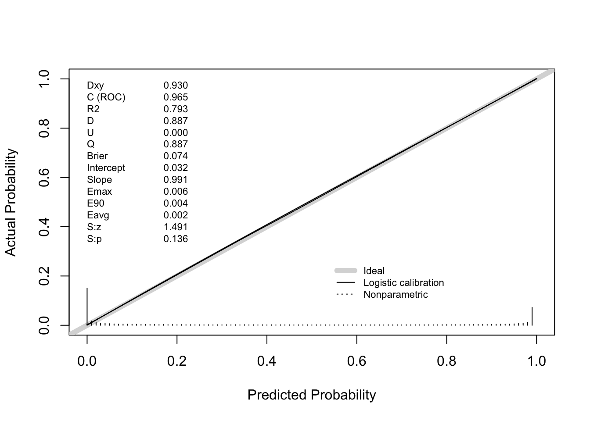
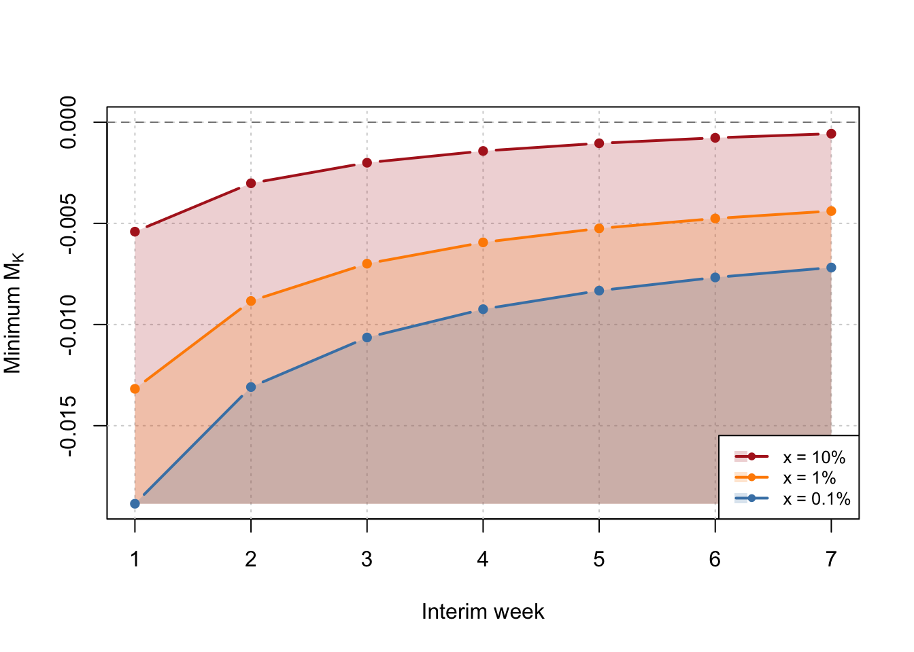

Introduction
The sequential (or always valid) confidence interval we use at Datadog is great because experimenters can run an experiment until they detect an effect (albeit with a loss in power, but hey there is no free lunch). But what if that day never comes?
In a previous post, I discussed how to think about experiment run times for Bayesian A/B tests. The key result was a closed-form expression for the expected impact to the product as a function of total sample size, given a prior on the true lift and a decision rule of the form \(S(N) < \hat \lambda\). That post answered the question: before seeing any data, how long should I plan to run?
This post answers the complementary question: given what I’ve seen so far, should I keep going? That is to say, this post concerns futility. If at some interim point the probability of eventually reaching a ship decision is sufficiently low, we can stop the experiment early and save the traffic for something more promising.
Frequentists have a well-developed theory for this in the form of group sequential designs (I’ve written about group sequential designs here and here, although I didn’t cover futility back then). The Bayesian version is, in my opinion, more natural: we condition directly on the posterior and ask a straightforward probability question.
Setup and Notation
Recall the setup from the previous post. We target the lift
\[ \lambda = \dfrac{E[Y(1)]}{E[Y(0)]} - 1 \>. \]
We observe an estimate \(\hat \lambda\) with standard error \(s_\lambda\) (via the delta method), and use a conjugate normal-normal model with prior \(\lambda \sim \operatorname{Normal}(\mu, \tau^2)\). The posterior variance and mean are
\[ V^{-1} = \dfrac{1}{s^2_\lambda} + \dfrac{1}{\tau^2} \>, \qquad M = V \times \left(\dfrac{\hat \lambda}{s^2_\lambda} + \dfrac{\mu}{\tau^2}\right) \>. \]
The three decision rules from the previous post all could be expressed in the form
\[ S(N) < \hat \lambda \>, \]
where
\[ S(N) = s_\lambda^2 \left[ \Phi^{-1}(p) \sqrt{\frac{1}{\tau^2} + \frac{1}{s_\lambda^2}} - \frac{\mu}{\tau^2} \right] \]
and \(p = c\) (probability to beat control), \(p = 1-\alpha/2\) (credible interval), or \(p = 0.5\) (posterior mean positive).
Suppose we have run the experiment for \(K\) weeks, accruing \(N_K\) total subjects. We have observed \(\hat \lambda_K\) with standard error \(s_K\), giving us a posterior \((M_K, V_K)\). If we continue for \(W\) more weeks at a rate of \(n_w\) subjects per week, the final sample size will be \(N_f = N_K + W \cdot n_w\). What is the probability we reach our shipping criteria after getting \(W \cdot n_w\) more samples?
The Closed-Form Solution
We can avoid simulation entirely. The key insight is that the posterior \((M_K, V_K)\) plays exactly the same role as the prior \((\mu, \tau^2)\) did in the previous post.
Conditional on the current posterior, the true lift is \(\lambda \sim \operatorname{Normal}(M_K, V_K)\) and the final observed lift given \(\lambda\) is \(\hat \lambda_f \mid \lambda \sim \operatorname{Normal}(\lambda, s_f^2)\). Marginalizing over \(\lambda\):
\[ \hat \lambda_f \sim \operatorname{Normal}(M_K, \> V_K + s_f^2) \>. \]
The ship decision requires \(\hat \lambda_f > S(N_f)\), so
\[\Pr(\text{ship} \mid \text{continue until reaching } N_f) = \Phi\left(\frac{M_K - S(N_f)}{\sqrt{V_K + s_f^2}}\right) \>.\]
Seems pretty straight forward. The nice part about this approach is that we can check how good our forecasts are since \(\Pr(\text{ship} \mid \text{continue until reaching } N_f)\) can be empirically validated. This brings us to one of my favorite topics to talk to data scientists about: calibration!
Calibration, Such an Aggravation
The closed-form \(\Pr(\text{ship} \mid \text{continue until reaching } N_f)\) is a prediction. We should verify it is calibrated: among experiments where we predict \(\Pr(\text{ship} \mid \text{continue until reaching } N_f) = p\), roughly fraction \(p\) should actually ship.
To check this, we simulate the full lifecycle of many experiments end-to-end:
- Draw a true lift from the prior.
- Simulate interim data at week \(K\) and compute the posterior \((M_K, V_K)\).
- Compute the closed-form \(\Pr(\text{ship} \mid \text{continue until reaching } N_f)\).
- Simulate the actual remaining data and check whether the experiment actually ships.
- Evaluate the calibration using something like
rms::val.probor similar tools.
You can see that below
Now, you might say “Demetri, you were simulating from the prior. I am not surprised that the procedure is calibrated”. While correct, I think you are missing my point. You can check if your procedure is calibrated yourself! You can even do this retrospectively. Take a look at what you knew a week before an experiment ended. Then, compute the probability you would have made a ship decision a week later, and voila. This is a great way to check if your prior is “right” in my opinion (a topic I anticipate I will write a lot more on in the coming months).
Bonus: Futility Boundary
We can also ask “At each interim week, what is the minimum posterior mean \(M_K\) such that \(\Pr(\text{ship} \mid \text{continue until reaching } N_f) > x\%\)” for any given \(x<0.5\)? This gives a futility boundary – if your posterior mean is below the line at any point, stop the experiment! Simply invert the win ship calculation to obtain
\[S(N_f) - z_{1-x} \sqrt{V_k + s^2_f} + \leq M_k \>. \]
